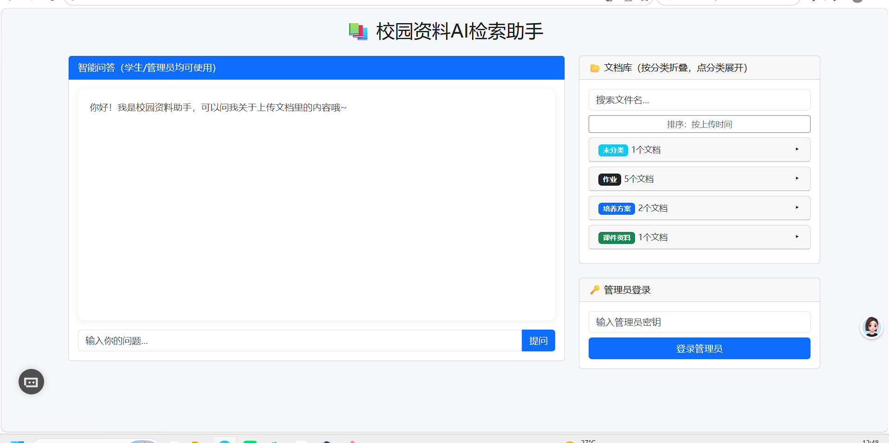
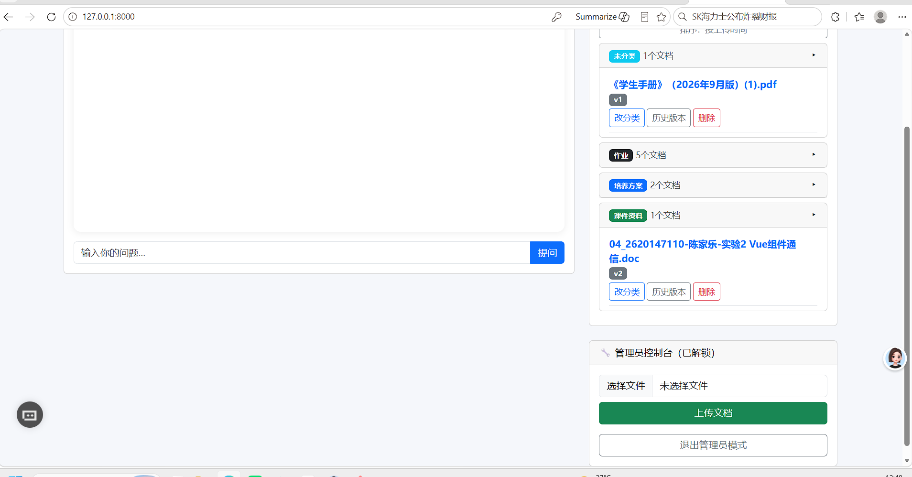
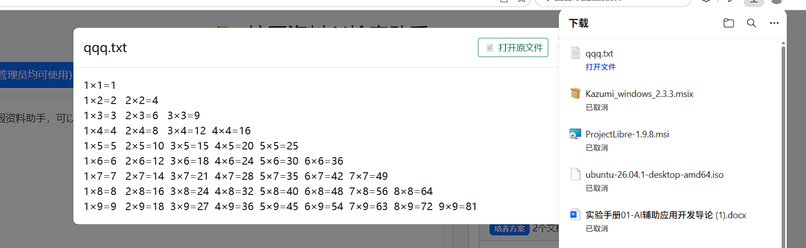

【已替换】Git提交历史（细粒度commit记录）

在校园日常学习与办公中，课程课件、培养方案、考试通知、实验报告等资料散落在班级群、个人U盘、网盘等各处，存在以下典型痛点：
| 痛点 | 具体表现 | 传统解决方式的局限 |
|---|---|---|
| 资料分散 | 同一门课的课件可能分布在多个群文件、多个同学的U盘中 | 每次找资料需要翻多个渠道，效率极低 |
| 查找困难 | 只能靠"文件名记忆"去找，记不清文件名就找不到 | 没有内容级检索能力，无法按语义搜索 |
| 版本混乱 | 同一份培养方案被反复修改，群里同时存在多个版本 | 无法区分新旧版本，容易用错过期文件 |
| 信息无法问答 | 培养方案里的学分要求、考试通知里的细则需要人肉翻阅 | 文档只能"看"，不能"问" |
本项目正是针对上述痛点，构建一套本地化部署的校园资料智能检索系统：把校园文档统一托管、自动分类、语义检索，并基于RAG（检索增强生成）架构实现"带来源标注的智能问答"，全程使用本地开源模型，无需调用外部付费API，保障学生课件、培养方案等敏感校园数据不出校。
| 层级 | 技术组件 | 选型依据 |
|---|---|---|
| 后端框架 | FastAPI + Uvicorn | 轻量、性能高、自带接口文档（/docs），适合本地部署 |
| 数据库 | SQLite（SQLAlchemy ORM） | 零配置、单文件、免部署，满足轻量场景 |
| 向量编码 | BAAI/bge-small-zh-v1.5 | 中文语义效果好、模型小（约90MB）、CPU可实时推理 |
| 大模型 | Ollama 部署 Qwen2.5:3B | 本地运行、数据不出校、3B参数在CPU上可运行 |
| 前端 | Bootstrap 5 单页应用 | 无构建工具链，单文件可直接托管，部署简单 |
| 文本解析 | PyMuPDF / python-docx | 分别解析PDF与Word文档，纯本地处理 |
系统采用轻量前后端分离架构，无重型依赖，部署简单：
入库链路：
用户上传文档 → 按类型提取文本(PDF/Word/TXT) → 按语义分块(每块约300字)
→ 向量编码(bge-small-zh) → 写入chunks表 → 调用大模型自动分类 → 写入documents表问答链路：
用户提问 → 问题向量化 → 余弦相似度检索Top3文本块
→ 拼接上下文Prompt → 本地大模型生成回答 → 标注参考来源返回用户版本管理链路：
上传同名文档 → 检测同名最新版 → 弹出覆盖确认 → 旧版标记is_latest=0
→ 新文档version+1、parent_doc_id指向旧版 → 管理员可查看历史版本链并回滚| 字段名 | 类型 | 说明 |
|---|---|---|
| id | 整数(主键) | 文档主键，自增 |
| filename | 字符串 | 用户上传的原始中文文件名 |
| filetype | 字符串 | 文件类型：pdf/word/txt |
| file_path | 字符串 | 服务器存储的安全文件名路径（UUID命名防冲突） |
| content | 长文本 | 提取后的文档全文内容 |
| category | 字符串 | AI自动分类标签（培养方案/考试通知/课件资料/行政通知/社团文件/作业） |
| category_confirmed | 整数 | 是否被管理员人工修正过（0=AI分类，1=人工修正） |
| version | 整数 | 文档版本号，从v1开始递增 |
| is_latest | 整数 | 是否为当前最新版（1=最新，0=历史版），学生端仅展示最新版 |
| parent_doc_id | 整数 | 上一版本文档id，用于追溯历史版本链 |
| uploaded_at | 时间 | 文档上传时间 |
| 字段名 | 类型 | 说明 |
|---|---|---|
| id | 整数(主键) | 分块主键，自增 |
| doc_id | 整数 | 所属文档id，关联documents表 |
| chunk_text | 长文本 | 分块后的文本片段 |
| embedding | 文本(JSON) | 文本片段对应的向量编码，用于相似度检索 |
本模块负责文档分块、向量编码入库与相似度检索，是"能问答"的核心。
核心实现：
def search_top3_chunks(db_path: str, question: str) -> list:
"""问题向量化后与库中分块做余弦相似度匹配，返回Top3"""
model = get_encoder() # 复用全局向量模型，避免重复加载
q_vec = model.encode(question) # 问题编码
scored = []
for chunk in all_chunks: # 遍历库中分块
c_vec = json.loads(chunk["embedding"])
sim = cosine_similarity(q_vec, c_vec) # 余弦相似度
scored.append((sim, chunk["text"], chunk["doc_id"]))
scored.sort(reverse=True, key=lambda x: x[0])
return [{"score": float(s), "text": t, "doc_id": d} for s, t, d in scored[:3]]通过OpenAI兼容协议调用Ollama本地部署的Qwen2.5:3B模型，实现回答生成与文档自动分类。
client = OpenAI(
base_url="http://localhost:11434/v1", # Ollama本地服务
api_key="ollama",
timeout=120.0, # 本地CPU推理较慢，放宽超时
max_retries=0 # 关闭自动重试，避免等待时间翻倍
)
def chat_with_llm(prompt: str) -> str:
response = client.chat.completions.create(
model="qwen2.5:3b",
messages=[{"role": "user", "content": prompt}],
temperature=0.3
)
return response.choices[0].message.content文档上传后自动取前500字内容，调用本地大模型将文档分到6类校园场景：培养方案、考试通知、课件资料、行政通知、社团文件、作业。同时提供管理员人工修正接口，修正后的标注数据可用于后续模型持续微调。
def classify_document(doc_content: str) -> str:
prompt = f"""你是校园文档分类助手，把下面这份文档分到以下6类中的一类：
可选分类：培养方案、考试通知、课件资料、行政通知、社团文件、作业
作业指学生提交的实验报告、课程作业、用例规约等；课件资料指老师上课用的PPT、讲义、教案。
只返回分类名称。
文档内容：{preview}
分类结果："""
# 优先精确匹配 → 同义词兜底（"实验/作业/用例"→作业，"课件/讲义/教案"→课件资料）→ 未分类# 上传时的版本升级核心逻辑（先查旧版，再保存新文档）
old = db.query(Document).filter(
Document.filename == file.filename,
Document.is_latest == 1
).first()
doc = save_document(db, file.filename, filetype, file_path, content)
if old:
old.is_latest = 0 # 旧版转为历史版
doc.version = old.version + 1
doc.parent_doc_id = old.id # 建立版本链单页Bootstrap界面，集成学生/管理员双视角：
系统共提供8个RESTful接口，均通过FastAPI实现，自带Swagger文档（/docs）。
参数：file（文件）、admin_secret（管理员密钥）、confirm（同名覆盖确认标志）
流程：校验权限 → 校验格式(PDF/Word/TXT) → 检测同名 → 提取文本 → 保存入库 → 分块向量化 → AI自动分类
返回：{msg, filename, version, category}
说明：返回所有最新版文档（is_latest=1），按上传时间倒序，学生端数据源
返回：[{id, filename, category, version}]
参数：keyword（模糊匹配文件名）
返回：匹配的文档列表
说明：返回文档元数据与提取的全文内容，供详情弹窗展示
说明：按类型返回原始文件（PDF直接预览、TXT直接显示、Word下载），保留原始格式
参数：admin_secret
说明：删除数据库记录并清理服务器上的原始文件
参数：new_category、admin_secret
说明：管理员手动调整AI分类结果，标记category_confirmed=1
说明：通过parent_doc_id递归遍历同一文件名的所有历史版本，支持一键回滚
参数：q（问题文本）
流程：问题向量化 → Top3检索 → 相似度阈值判断（低分走正常对话）→ 拼接Prompt → 本地大模型生成 → 标注来源
返回：{answer, sources:[{doc_name}]}
本项目全程使用大模型辅助开发，以下记录真实开发过程中遇到的典型Bug与AI协同定位修复的过程，是"人机协同开发"能力的最直接证据。
本项目全程使用大模型辅助开发，核心Prompt设计思路：
Prompt证据链说明：项目在backend/prompt-evidence目录下保留了3份核心Prompt开发证据：
| 证据文件 | 覆盖功能模块 | 证据要点 |
|---|---|---|
| prompt-1-rag.md | RAG检索模块 | 分块策略、向量检索、防幻觉Prompt设计 |
| prompt-2-local-llm.md | 本地大模型部署 | Ollama集成、超时策略、分类Prompt |
| prompt-3-features.md | 分类/权限/版本管理 | 功能需求Prompt、Bug修复Prompt |





| 编号 | 测试项 | 操作步骤 | 预期结果 | 结果 |
|---|---|---|---|---|
| T01 | 上传PDF文档 | 管理员上传PDF文件 | 上传成功、自动分类、显示版本v1 | ✅ 通过 |
| T02 | 上传Word文档 | 管理员上传.doc/.docx文件 | 文本提取成功、自动分类 | ✅ 通过 |
| T03 | 上传TXT文档 | 管理员上传txt文件 | 文本提取成功、自动分类 | ✅ 通过 |
| T04 | 同名文档版本升级 | 再次上传同名文件并确认 | 版本号+1、旧版转为历史版 | ✅ 通过 |
| T05 | 同名上传取消 | 上传同名文件点"取消" | 不上传、旧版本保持不变 | ✅ 通过 |
| T06 | 版本回滚 | 管理员查看历史版本并回滚 | 回滚到指定版本、旧最新版转历史 | ✅ 通过 |
| T07 | 智能问答 | 学生提问文档相关内容 | 返回答案并标注参考来源 | ✅ 通过 |
| T08 | 闲聊识别 | 提问"你好" | 正常问候，不引用无关文档 | ✅ 通过 |
| T09 | 权限校验 | 学生访问上传接口 | 返回403权限不足 | ✅ 通过 |
| T10 | 分类修正 | 管理员修改文档分类 | 分类更新并标记人工修正 | ✅ 通过 |
| T11 | 文档搜索 | 按关键词搜索文件名 | 返回模糊匹配结果 | ✅ 通过 |
| T12 | 原文件查看 | 详情弹窗点击"打开原文件" | PDF预览/Word下载，格式保留 | ✅ 通过 |
| 编号 | 异常场景 | 处理策略 | 结果 |
|---|---|---|---|
| E01 | 大模型无响应/超时 | 120秒超时+兜底返回检索片段，页面不卡死 | ✅ 通过 |
| E02 | Ollama模型丢失 | 接口返回404，兜底提示，不崩溃 | ✅ 通过 |
| E03 | 上传不支持格式 | 返回"只支持PDF/Word/TXT"提示 | ✅ 通过 |
| E04 | 版本链死循环 | 后端遍历加seen集合防循环 | ✅ 通过 |
| E05 | 向量模型加载失败 | 启动时输出明确错误日志 | ✅ 通过 |
| 项目 | 要求 |
|---|---|
| 操作系统 | Windows 10/11（本项目开发环境） |
| Python | 3.10+（含venv虚拟环境） |
| 大模型运行时 | Ollama（本地部署Qwen2.5:3B） |
| 磁盘空间 | 模型约1.9GB + 项目约200MB |
| 网络 | 首次安装需联网下载模型，运行时完全离线 |
#!/bin/bash
# 一键启动：自动激活虚拟环境、配置HF镜像、启动FastAPI服务
cd "$(dirname "$0")"
source venv/Scripts/activate # 激活虚拟环境
export HF_ENDPOINT=https://hf-mirror.com # 国内镜像加速
uvicorn main:app --reload --port 8000 # 启动服务启动后浏览器访问 http://127.0.0.1:8000 即可使用，管理员密钥：admin123456